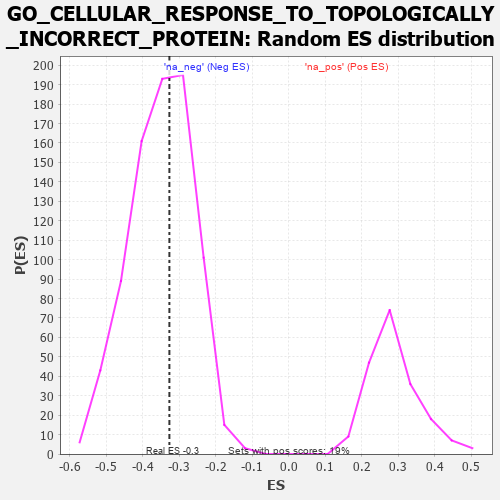

| | | Dataset | 7d |
| Phenotype | NoPhenotypeAvailable |
| Upregulated in class | na_neg |
| GeneSet | GO_CELLULAR_RESPONSE_TO_TOPOLOGICALLY_INCORRECT_PROTEIN |
| Enrichment Score (ES) | -0.32685333 |
| Normalized Enrichment Score (NES) | -0.9385516 |
| Nominal p-value | 0.573201 |
| FDR q-value | 0.9192605 |
| FWER p-Value | 1.0 |
Table: GSEA Results Summary
 Fig 1: Enrichment plot: GO_CELLULAR_RESPONSE_TO_TOPOLOGICALLY_INCORRECT_PROTEIN
Fig 1: Enrichment plot: GO_CELLULAR_RESPONSE_TO_TOPOLOGICALLY_INCORRECT_PROTEIN
Profile of the Running ES Score & Positions of GeneSet Members on the Rank Ordered List
| PROBE | GENE SYMBOL | GENE_TITLE | RANK IN GENE LIST | RANK METRIC SCORE | RUNNING ES | CORE ENRICHMENT | | 1 | GSK3A | | | 351 | 0.745 | 0.0012 | No |
| 2 | BAX | | | 387 | 0.711 | 0.0402 | No |
| 3 | AMFR | | | 856 | 0.518 | 0.0128 | No |
| 4 | NCK2 | | | 1131 | 0.458 | 0.0062 | No |
| 5 | DERL2 | | | 1632 | 0.368 | -0.0343 | No |
| 6 | HYOU1 | | | 1692 | 0.358 | -0.0199 | No |
| 7 | CUL3 | | | 1893 | 0.321 | -0.0255 | No |
| 8 | GOSR2 | | | 2050 | 0.298 | -0.0269 | No |
| 9 | BAG3 | | | 2620 | 0.209 | -0.0859 | No |
| 10 | ERO1A | | | 2925 | 0.162 | -0.1144 | No |
| 11 | TLN1 | | | 3030 | 0.145 | -0.1186 | No |
| 12 | UFL1 | | | 3041 | 0.144 | -0.1111 | No |
| 13 | ERN2 | | | 3160 | 0.129 | -0.1182 | No |
| 14 | SERP2 | | | 3286 | 0.108 | -0.1273 | No |
| 15 | PDIA6 | | | 3512 | 0.075 | -0.1511 | No |
| 16 | DERL1 | | | 3570 | 0.065 | -0.1543 | No |
| 17 | HSF1 | | | 3718 | 0.039 | -0.1705 | No |
| 18 | DAXX | | | 3722 | 0.038 | -0.1686 | No |
| 19 | SRPRA | | | 3788 | 0.029 | -0.1750 | No |
| 20 | TOR1A | | | 4030 | -0.013 | -0.2046 | No |
| 21 | FICD | | | 4087 | -0.022 | -0.2103 | No |
| 22 | TBL2 | | | 4175 | -0.038 | -0.2190 | No |
| 23 | AUP1 | | | 4315 | -0.062 | -0.2328 | No |
| 24 | MYDGF | | | 4429 | -0.081 | -0.2420 | No |
| 25 | SYVN1 | | | 4454 | -0.085 | -0.2399 | No |
| 26 | CXXC1 | | | 4557 | -0.107 | -0.2462 | No |
| 27 | BAG6 | | | 4563 | -0.108 | -0.2402 | No |
| 28 | SRPRB | | | 4769 | -0.151 | -0.2568 | No |
| 29 | EP300 | | | 4941 | -0.186 | -0.2670 | No |
| 30 | DDX11 | | | 5102 | -0.225 | -0.2735 | No |
| 31 | HDAC6 | | | 5183 | -0.244 | -0.2687 | No |
| 32 | SSR1 | | | 5391 | -0.294 | -0.2768 | No |
| 33 | EDEM1 | | | 5541 | -0.331 | -0.2754 | No |
| 34 | DCTN1 | | | 5950 | -0.454 | -0.2991 | Yes |
| 35 | XBP1 | | | 6011 | -0.475 | -0.2777 | Yes |
| 36 | CALR | | | 6077 | -0.499 | -0.2554 | Yes |
| 37 | HSPB8 | | | 6408 | -0.621 | -0.2591 | Yes |
| 38 | PDIA5 | | | 6639 | -0.734 | -0.2433 | Yes |
| 39 | PACRG | | | 7007 | -0.940 | -0.2322 | Yes |
| 40 | UFD1 | | | 7157 | -1.040 | -0.1874 | Yes |
| 41 | VAPB | | | 7482 | -1.378 | -0.1441 | Yes |
| 42 | ASNS | | | 7595 | -1.547 | -0.0637 | Yes |
| 43 | BOK | | | 7715 | -1.817 | 0.0323 | Yes |
Table: GSEA details [plain text format]

Fig 2: GO_CELLULAR_RESPONSE_TO_TOPOLOGICALLY_INCORRECT_PROTEIN: Random ES distribution
Gene set null distribution of ES for GO_CELLULAR_RESPONSE_TO_TOPOLOGICALLY_INCORRECT_PROTEIN